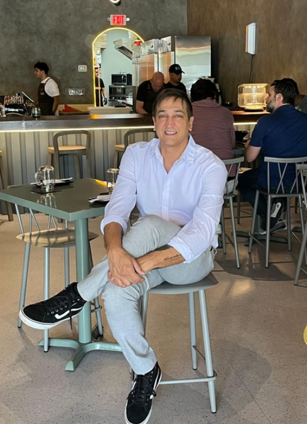

Helping restaurant concepts launch, stabilize and improve profitability through structured operational support and performance monitoring.
Operational preparation before the restaurant opens including operational structure, menu costing, pricing strategy, staffing structure, supplier sourcing, POS configuration and kitchen/service workflow planning.
Operational supervision during the restaurant launch including staff training coordination, kitchen workflow organization, service structure and launch supervision.
Post-opening operational monitoring focused on improving performance and margins including labor structure optimization, food cost monitoring, supplier management and operational discipline.
Structured monitoring system that analyzes restaurant performance through dashboards covering revenue performance, guest behavior, product performance, purchasing efficiency and supplier compliance.
Modern restaurant operations require constant visibility into the key drivers of profitability.
High-level snapshot of revenue, costs, margins, and key operational KPIs for executive decision-making.
Detailed revenue breakdowns by channel, time period, and category to identify growth opportunities.
Analysis of guest patterns, average ticket, order composition and frequency to optimize the dining experience.
Menu item performance analysis including popularity, profitability, and contribution to overall revenue.
Track purchasing patterns, cost variances, and inventory efficiency to control food costs effectively.
Monitor supplier delivery performance, pricing consistency, and quality standards to ensure operational reliability.
Global Venture USA focuses on restaurant operational development and performance optimization. The approach combines hands-on restaurant operational experience with structured monitoring systems designed to identify profitability opportunities and operational inefficiencies.

Matias Pagano has been involved in the development and operation of restaurant concepts across multiple markets including Argentina and the United States. His experience includes restaurant development, operational management, brand expansion and performance optimization.
Global Venture works with a flexible network of professionals depending on the needs of each project. This structure allows restaurant owners to access specialized expertise without the fixed cost of building a large internal team.
Restaurant development inquiries, operational consulting, and performance monitoring systems.